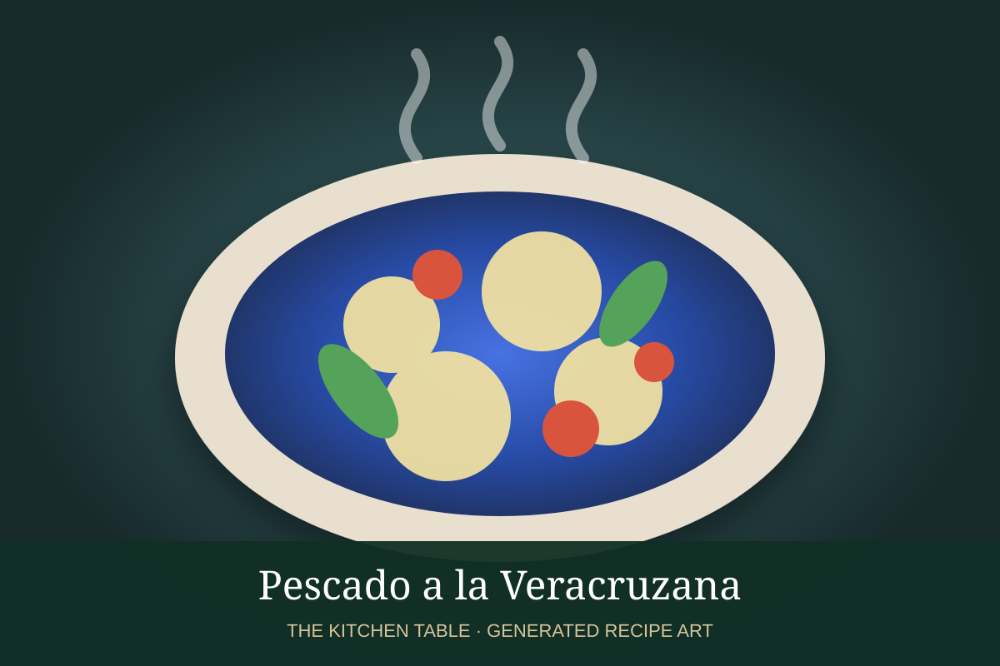

← Back to all recipes
SEAFOOD · MEXICAN
Pescado a la Veracruzana
White fish simmered in a Veracruz-style tomato sauce with olives, capers, garlic, herbs, and chiles.
45 minServes 4

Photo: Mexico in My Kitchen
Ingredients
- 4 white fish fillets, 6 oz each
- 2 tbsp olive oil
- 1 small onion, sliced
- 3 garlic cloves, minced
- 4 Roma tomatoes, chopped
- 1/3 cup green olives, sliced
- 2 tbsp capers
- 1 jalapeño or pickled chile, sliced
- 1 tsp Mexican oregano
- 1 bay leaf
- Salt and black pepper
- Lime wedges
Preparation
- Season fish with salt and pepper.
- Cook onion in olive oil until soft; add garlic.
- Add tomatoes, olives, capers, chile, oregano, and bay leaf and simmer 15 minutes.
- Nestle fish into the sauce, cover, and cook gently until just opaque.
- Remove bay leaf and adjust seasoning.
- Serve with rice and lime.